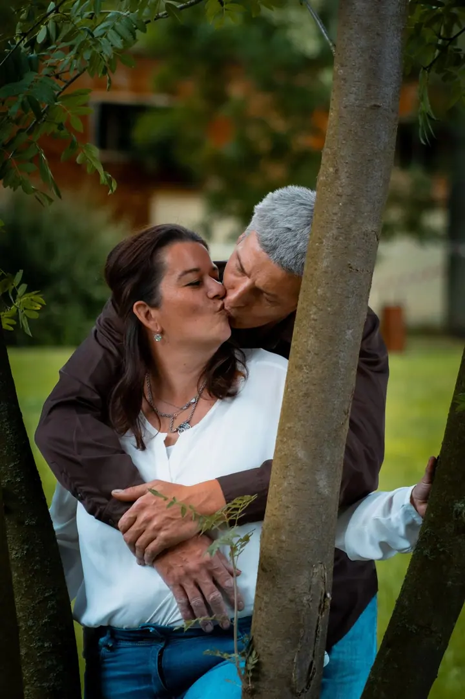
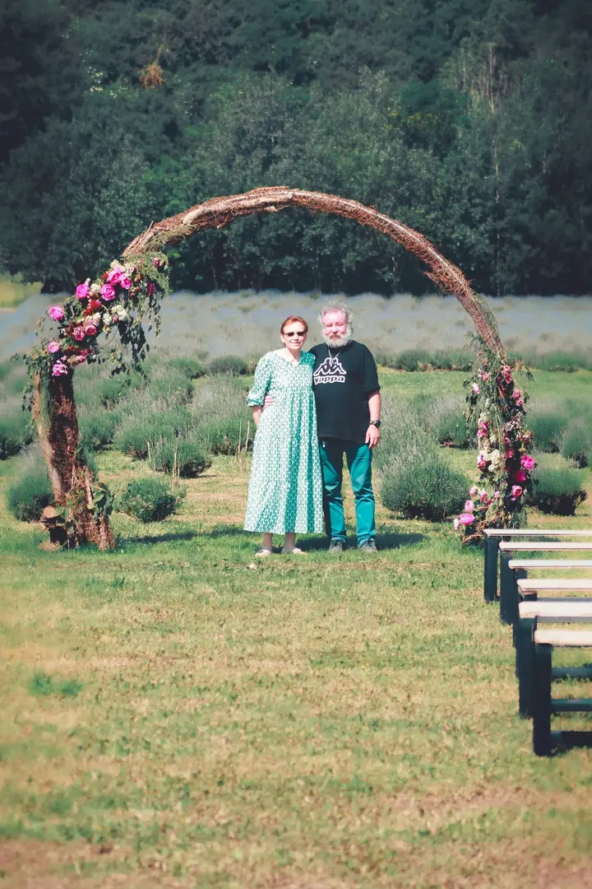
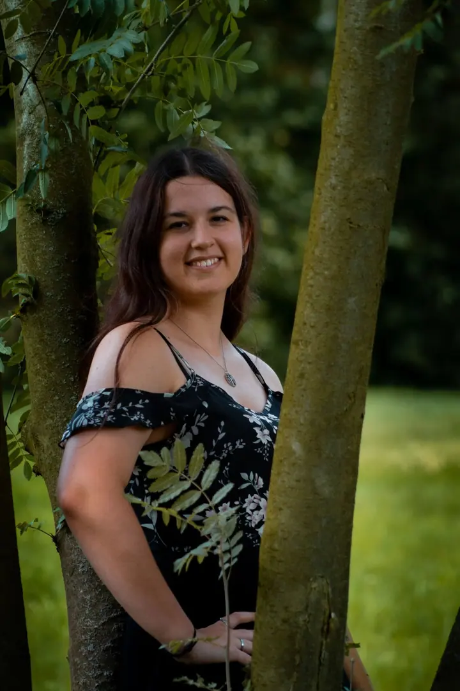
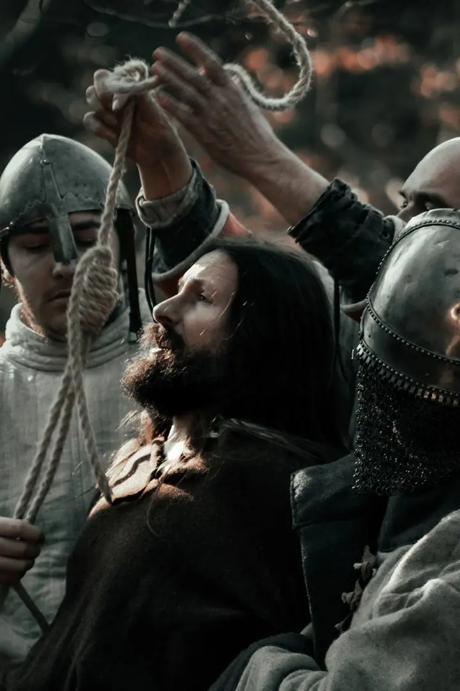
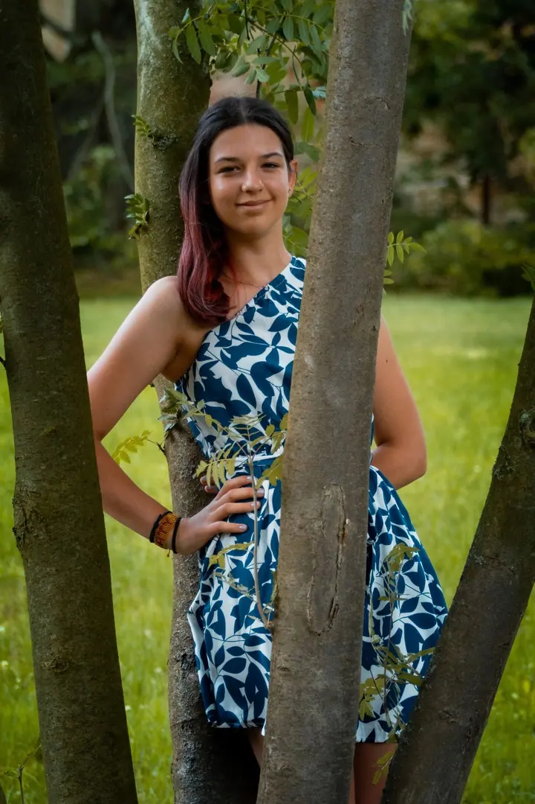
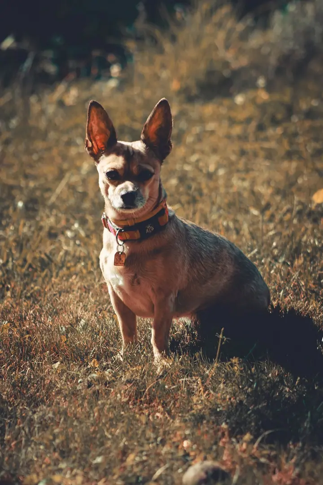
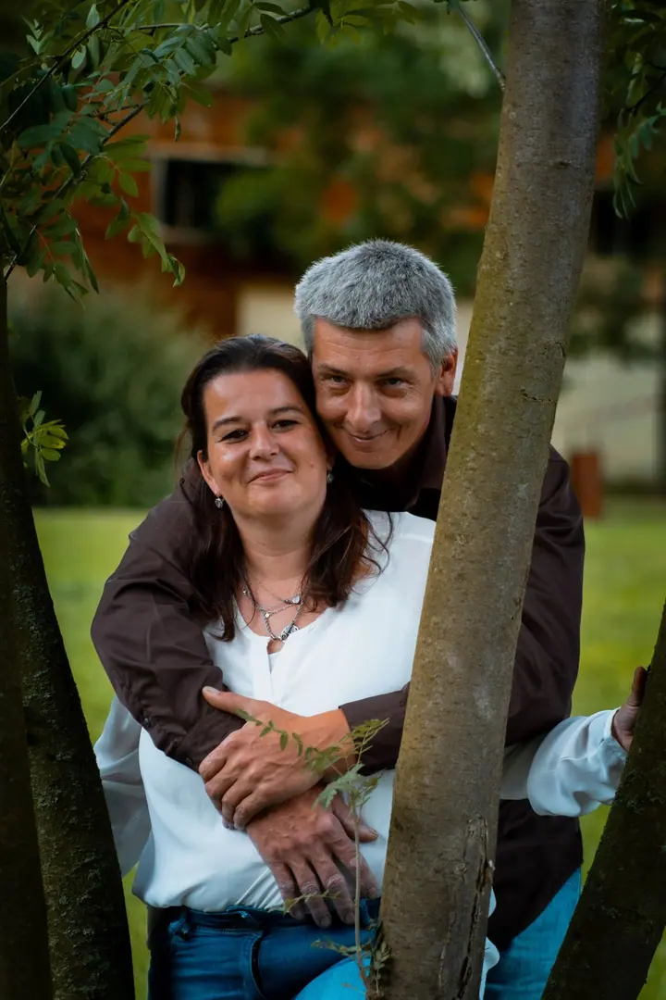
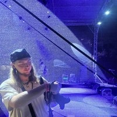

01 / 04
Párové focení
Společné focení venku, mezi stromy a v zeleni, kde se můžete uvolnit a být spolu. Celé focení si předem domluvíme podle vás.
Zeptat se na termín→






Okamžiky, které se nedají zopakovat
Zeptat se na termín →(01) Ahoj
Jmenuji se Dominik Fišar a jsem fotograf. Fotím páry a portréty, koncerty a akce i zvířata , od zoo až po domácí mazlíčky. Na fotkách mám nejradši to, že zachytí okamžik, který už se nevrátí.
(02) Co fotím
01 / 04
Společné focení venku, mezi stromy a v zeleni, kde se můžete uvolnit a být spolu. Celé focení si předem domluvíme podle vás.
Zeptat se na termín→02 / 04
Fotím koncerty ve dne i v noci, historické slavnosti a motoristické akce. Zachytím atmosféru, pohyb i lidi kolem.
Zeptat se na termín→03 / 04
Fotím zvířata ze zoo, divoká zvířata i domácí mazlíčky. Stačí trochu trpělivosti a správné světlo.
Zeptat se na termín→Dále nabízím
Portréty fotím venku v exteriéru i ve fotoateliéru. Přirozeně, v klidu a tak, abyste se na fotkách poznala.
↗(04) Postup
Od první zprávy po hotovou galerii.
Krok 1 z 4
Napište mi přes kontaktní formulář, co si představujete. Domluvíme se na termínu a rozsahu.
Krok 2 z 4
Společně vybereme, jestli budeme fotit venku, v ateliéru, nebo přímo na vaší akci.
Krok 3 z 4
Fotíme v klidu a bez zbytečného aranžování. Hledám momenty, které jsou přirozené a vaše.
Krok 4 z 4
Vyberu nejlepší snímky, upravím je a pošlu vám je v plném rozlišení.
Okamžik, který je navždy pryč, zůstane na fotce.
(05) Za objektivem
Jmenuji se Dominik Fišar a fotím v Praze. Na fotkách mám rád to, že zachytí okamžik, který je navždy pryč a nedá se zopakovat. Proto chci, aby z každého focení měli radost oba, vy i já.
Nejvíc fotím páry a portréty, venku v přírodě i ve fotoateliéru. Stejně rád ale vyrážím na koncerty, historické slavnosti a motoristické akce, kde se všechno děje rychle a nic se nedá zopakovat.
V portfoliu najdete i zvířata, auta, architekturu, produkty a natáčení. Pokud máte zájem o moje služby, napište mi a domluvíme se.

Dominik
Dominik Fišar · Fotograf párů, portrétů, akcí a zvířat
Fotím v Praze, venku v přírodě i ve fotoateliéru. Místo vždy vybereme podle toho, co se k vašemu focení hodí.
Cena záleží na typu a délce focení. Napište mi, co potřebujete, a pošlu vám nabídku.
Ano. Fotím koncerty ve dne i v noci, historické slavnosti a motoristické akce.
Rád. Fotím zvířata ze zoo, divoká i domácí mazlíčky, takže se nebojte přijít i se psem.
(07) Kontakt
Napište pár vět o tom, co si představujete, a termín, který se vám hodí.